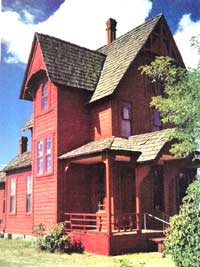
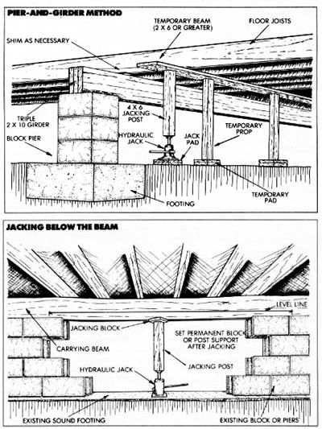

Issue # 106 - July/August 1987
Setting things straight from the ground up.
© HARALD SUND/THE IMAGE BANK
Don't get me wrong... crooked floors and cocked door jambs can be charming as all get-out in a home that's seen enough seasons to settle down gracefully. But when you're remodeling a ranch house that's hardly 10 years old-as I'm doing right now-sagging sills and drooping floor joists lose their appeal the first time you try to find a square corner.
Human errors and a host of other unforeseen problems can take their toll on the integrity of any structure. If yours happens to be one of them, I'll share a few things I've learned about putting a house on the level without spending a fortune.
The most important part of the repair job doesn't require that you fix anything; it does demand that you make an honest examination of the problem areas. I knew something was wrong because my floor dipped and the bathroom door wouldn't close correctly. In your case, it may be buckled baseboard trim, cracked wall joints or a cocked window casement that gives you the first clue.
In any event, begin your investigation outside. Look for cracks in foundation blocks and joints, misaligned ridge and eave lines and obvious things like out-of-whack siding, doorframes and window trim. Then go inside and, using a long framer's level, check the slant of the floors, doorframes and ceilings in the areas that concern you. Be sure to take notes you can refer to later.
Armed with the information you've gathered, you can proceed to the basement or crawlspace to get to the root of the problem. Understand that every part of the structure, including the second-story walls and the roof, is supported in some way by a foundation member and its footing. Hence, if part of the foundation fails, it will affect that portion of floor and wall resting directly upon it as well as the studs, plates and rafters that depend on the wall for support. First examine the perimeter foundation and the wooden sill plates. If you're working in a crawlspace, have plenty of light available and clear the area of any debris that's gathered there. Your goal is to find how level the sills are, and that can be determined inexpensively with a ball of nylon twine, a tape measure and a handful of 8-penny nails.
Begin at one corner of the building and start a nail into the bottom of the end floor joist about a foot from the sill. Then follow the foundation wall to the nearest corner and repeat the process at the last joist. Stretch your line between the two nails, then-to locate any variations-measure the distance between the cord and the bottom of the joists. If the foundation has settled drastically, you may have to keep the line straight by holding it away from the joists with a spacer block next to each nail; that's OK as long as both spacers are the same thickness.
This will tell you if the sill is straight. Next, you'll want to determine if it's level. Lay your framer's level carefully against the string or hang a mason's line level from it. Chances are the section of wall you're working on isn't perfect, but the rest of the foundation may not be either. To be sure, go on to check the other perimeter plates, and record your findings.
Finally, concentrate on the middle of the structure. Homes with basements may use posts or load-bearing partitions to support a main joist-carrying beam in the center of the floor. Those with crawlspaces usually have a number of support piers to hold the girder, or have internal block foundation walls. Check this beam with the line and level, and, if you're concerned about any sagging joists, survey their midpoints as well.
You've scouted the territory, and now you'll have to make some decisions. Be realistic: As a homeowner hoping to make some repairs without calling in a professional, the worst thing you can do is commit yourself to a major project you don't have the time or equipment to complete. Instead, try to live with correcting the specific problem that got your attention in the first place.
Think, too, of what's above the beam you plan to raise. Should there be a wall or a support column, will a major boost crack glass or separate molding joints? Is there any plumbing in the wall that might split? If you don't consider these possibilities, you may take on a whole new set of headaches.
Realistically, the amateur is presented with only a handful of solutions to house-settling woes: repairing the foundation, replacing damaged wood structure and adding new support where needed. But the methods of achieving those goals are many.
The best I can do is go over a few standard techniques used in the situations you're most likely to be faced with. Besides the tools and jacks mentioned in the accompanying side-bar, you'll need to stock a 4 X 6 jacking post long enough to reach from the floor joists to the top of your jack, a 3' -long 4 X 6 or something equivalent and an assortment of short 1 X 4s, 2 X 4s and 2 X 6s to use as shims. You'll also need some material to make jack pads; I used a pair of 14" -long 2 X 12s, glued and spiked together, under each jack to give it a wide base of support.
Let's assume that you have a situation similar to mine: A main floor beam has settled in the middle because the support beneath it is inadequate or damaged. You've read the sidebar on foundation failure, you've identified the cause of the problem, and you're prepared to correct it and avoid repeating the same mistakes.
There's no getting around it-the footing and foundation of your house are essential to its structural well-being. Even so, footings are sometimes insufficient and foundations poorly laid or out of level. Soil settlement, caused by construction over uncompacted earth or lowering of the water table, can damage even good work, as can excessive moisture brought on by poor drainage. And mortar joints in older brick foundations can succumb to age, freezing, chemical assault or any number of exposure-related miseries.
Support posts beneath the home's interior are even more likely to fail over the years. They may warp, then bend under pressure. Often, wooden posts are set on a dirt floor with no footing to transmit loads. If the weight doesn't sink them, rot and insects usually will. A thin basement slab is no substitute for a sound footing, either... especially if it's constantly moist.
The object is to find out-and fix-what caused the problem to begin with. If the source isn't obvious, consider calling in a contractor for advice. Never leave the question unsettled, or you may be back making the same repairs in a couple of years. By then, things will probably be worse.
Before you can start, you need to acquire a few tools of the trade. Professional house movers can use high-tech hydraulic jacks to coax any home to whatever level they please. But one-time housewrights have to get by on the bare minimum to keep costs in check. Borrow, if you can, two 10- or 12-ton hydraulic pump jacks, each with a threaded cap shaft and a 6" stroke. For a single-story house, 6-ton units should be sufficient. Heavy-duty screw jacks, operated by rotating a handle, aren't as convenient but will function just fine. For light work in tight places, you might also consider locating a small scissors jack like the kind used for imported cars.
If you're working in a basement, you'll probably need one or two temporary jack posts, or "red-heads," to support a beam that requires several columns. They're generally rated at 7 to 9 tons capacity and are adjustable from 6' to 8½' in height. The best ones have a threaded cradle at the top for fine tuning, yet shouldn't cost more than $30 or so.
Finally, don't go house-jacking without a 5' or 6' pinch bar, a crowbar and some kind of flat pry bar. And even the most meticulous individuals would be surprised at how often healthy determination and a hefty sledgehammer come in handy.
In this case, you'll be jacking from directly below the beam, so the process is straightforward. If you have a sound continuous footing but part of the internal foundation wall is damaged or missing, carefully remove a small section of bad wall and chisel any mortar debris from the surface of the footing at that point. Lay a pad on the concrete, set your jack so it's perfectly plumb, and place a shim block between the jack cap and the beam. Then raise the mechanism just enough to take some load off the sagging girder. When it's time to actually jack the beam, limit yourself to ¼" of lift per day, and don't raise the member any more than what's needed to slide the support under it.
Presumably, you'll want to repair the wall to match what's already there, especially if it's something standard like concrete block. Buy enough common and half blocks to patch the entire damaged area, and get a bag of premixed mortar as well (one 60-pound sack will bond about 15 standard blocks with 3/8” joints). Then carefully replace the missing pieces, using the existing wall pattern as a guide. Use a small trowel to "butter" the joint surfaces, and a striking tool to pack the joints where there's a tight fit. Never allow two vertical joints to meet.
If you need to replace a larger section of wall, set up a second jack a distance down the footing from the first, and lift the beam by ¼" increments until you clear the intended wall crown (a line stretched from corner to corner will help determine this). For a triple 2X10 carrying beam, a support every 6½' is adequate; a floor girder using double 2X10s would call for bracing every 4' or so. Don't agonize over laying up a continuous wall if a jack support is in a bad spot. A block-length gap here and there in the support wall won't amount to much considering the span figures given above.
After you've laid up the blocks, allow a week or so for the mortar to set (full-cure time is 28 days), then lower the beam slowly to meet the new support. Any settling thereafter can usually be adjusted by shimming between the block and the beam.
You would use essentially the same technique to replace defective posts beneath a beam in a basement. In this case, the posts could be warped or damaged, the pads disintegrated or the beam itself not supported adequately. Plan your repairs before you start jacking or your temporary supports may get in the way of your permanent ones.
If just a post or two need to be replaced, simply locate a jack and a pad 6" or so from the old column but directly beneath the beam, tack a 2 X 6 spacer flat to the beam right above the jack cap, and trim your 4 X 6 jacking post to fit between the fully collapsed jack and the spacer block. Use your level to check the position of the post, then jack in ¼” steps until you can safely remove the old column and replace it with a new wooden post or metal-cased Lally column. To reset a series of posts, work from one end of the beam to the other, replacing and fastening each column as you go.
In some cases, the column footings are no longer adequate or are nonexistent. Here, you would position your jack at least 3' away from the column to allow you to dig out the old footing or excavate for a new one at that spot (the section on piers will cover this later). If you're concerned about stretching the unsupported span by this extra distance, set up a second jack support 3' to the opposite side of the post you're working on.
Like the tripled 2 X 10s, a 6 X 8 center beam needs support every 6½' or 7'; if you have to set additional columns to upgrade your structure, follow the footing and spacing rules of thumb or refer to your local building code for specifics.
Another fix for sagging floors is something that's common in older houses and is even used today where joist spans are long or surfaces are expected to support greater loads. It's nothing more than a heavy beam set perpendicularly beneath the floor joists at mid-span. This girder can extend a short distance or the full width of the house, and it's supported from below on posts or concrete piers.
Normally, you'd place the girder where joist sag is the greatest-right at the center of the span. Occasionally, other factors like poorly planned additions or weakening of the wood can cause joists to deform at other points along their reach. Determine the cause of deflection so you can set the support at the right place; a joist may trick you by sagging at its center even though the load is bearing on a point closer to either end.
Assuming you've located the best bracing spot, figure out how long you need to make the girder by evaluating the notes you took earlier. Since it's easier to construct a beam than it is to hand-dig a half dozen or more footing holes, plan on sandwiching three 2 X 10s together with clamps, construction adhesive and 16-penny nails if the girder is longer than 7'. If it isn't, a five-block wall (80" long) and wooden shimming of whatever height necessary will probably be all you'll need for support.
Mark the positions for the pier footings by hanging a weighted string from the floor joists at the appropriate spacing. Footings should be 6" to 8" wider than the block or post they're supporting and needn't be more than 12" thick. It's standard practice to place footing bottoms 12" below the frost line, but check with a contractor or your building inspector for local rules concerning interior footings.
A 16 "-wide trench should have two parallel lengths of ½" reinforcing bar set horizontally near its base. Two more pieces driven vertically into the ground and leveled to the height of the completed footing at each end will allow you to trowel the poured concrete to the correct plane. A standard packaged premix will suit the job nicely.
To make a pier, just mortar a block to the surface of the footing and lay more on top as needed, checking with the level to make sure each course is true. If you're building a small wall, stagger the joints and check for bowing as well. You can fill the block cores with rebar and concrete for additional strength.
Once you've come within girder distance of the joists, you'll have to jack the floor to slide the beam in place. Follow the procedure given earlier, except in this case you'll need to use a flat 2 X 6 as a temporary beam to hold the floor up on 4 X 4 props placed at least every 4'. Jack from one end to the other, and set the posts on pads as you go. Shim between the joists and the permanent girder if you need to fill space, then remove the temporary beam and props. If you're supporting the girder with wooden posts, make sure they rest on concrete above the earth; some codes require that you use metal feet, as well, to secure the posts.
This jacking technique is often used when a foundation sill plate needs replacing and the joist ends are still good, or in some cases when a perimeter foundation needs repair and it's inconvenient to jack from directly below the beam. Because an exterior wall carries the full weight of floors and roof rafters, it's important to brace the temporary beam well and to use a doubled or heavier beam if you doubt the 2 X 6's load-carrying ability.
With the floor joists lifted, they'll either separate from the sill or the sill will rise from the foundation, providing a bit of working room. Replace the sill where needed, fix and level the foundation, then fasten the sill back in place with lag bolts and masonry shields. After jacking the floor back down again, be sure to toenail the joists firmly in position.
If you're anything like me, the most time you ever spent under the house was when looking for the garden hose. But given the opportunity to save perhaps thousands of dollars while learning something about one of your biggest investments, it wouldn't hurt to take a hard look at what's happening under the floor you walk on. Just be careful, and please-think before you act.
|
 © HARALD SUND/THE IMAGE BANK |
 |
|